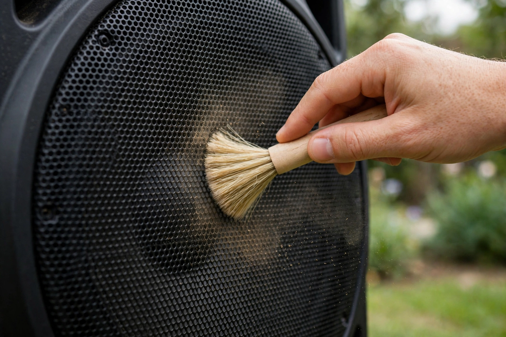

Why Party Speakers Get Dirty Faster
A party speaker is bigger than a phone speaker, and it lives a rougher life. It goes to gardens, rooftops, and beach parties, where dust, sand, and smoke settle on the grille. Drinks spill on it, hands touch it with food on them, and it often sits on the floor where dust gathers.
The grille is the first part to suffer. Its holes are wide enough to catch dust, crumbs, and sand, and the sound has to push through all of it. When the grille is blocked, the speaker sounds dull and quiet, even at full volume. Cleaning the grille alone often brings the clear sound back.
Party speakers also have big cones behind the grille. Dust on the cones adds weight and changes how they move, which makes the bass sound weak. A gentle clean, done the right way, protects both the grille and the cones.
Before You Start: Unplug and Check
Turn the speaker off and unplug it from the wall. If it runs on a battery, switch it off and remove the battery if it comes out. Never clean a speaker that is plugged in or playing music.
Look at the whole speaker in good light. Check the grille for dust and sand, the cabinet for sticky marks, and the ports for dirt. Check the manual if you still have it, because some party speakers are splash resistant and some are not. If the manual says the speaker is not water resistant, keep all water away from it.
Move the speaker to a clean, dry place with space around it. Put a dry towel under it so dust and sand fall on the towel, not on your floor.
How to Clean the Outside of a Party Speaker
Start with the cabinet, the box around the speaker. Wipe it with a dry soft cloth to take off the dust. For sticky marks, dampen a small corner of the cloth very lightly, wipe the mark, and dry the spot at once. Never pour water on the cabinet or spray cleaner straight onto it.
Clean the handles and the feet too, because they collect dust and sticky dirt from hands and floors. A dry cloth is enough for most marks. For a stubborn sticky spot, use a tiny bit of mild soap on the cloth, wipe, then wipe again with a clean damp cloth, and dry it fully.
Do not use strong cleaners, bleach, or alcohol wipes on the cabinet. They can fade the colour and damage the surface. A soft cloth and a little patience work better.
How to Clean the Speaker Grille
The grille is the mesh or cloth cover in front of the speaker. Brush it gently with a soft dry brush, in short strokes, from top to bottom. Hold the speaker so the grille faces down, and let the dust fall away from it. A clean soft paintbrush or a makeup brush works well.
For dust stuck in the small holes, press a piece of soft tape lightly over the grille and lift it off. The tape picks up loose dust. Do not press hard, and do not use strong tape, because it can leave glue on the grille.
Never push a pin, a needle, or a sharp tool into the grille holes. The cones behind the grille are thin and easy to tear, and one small hole in a cone can ruin the sound. If the grille cover comes off, take it off and brush it on its own, but only if the manual says it is safe to remove. Our guide on how to clean a portable speaker shows the same grille steps for a smaller speaker.

How to Clean the Speaker Cones Gently
The cones are the round parts that move to make sound. They are thin and easy to damage, so clean them only if you can see dust on them, and be very gentle.
Use a soft dry brush with almost no pressure, and brush from the centre outward in one direction. Do not press the cone with your finger, and do not use a wet cloth on it. Paper cones can soak up water and go soft, and even plastic cones can tear if you press hard.
If the cones look clean, leave them alone. A clean grille is usually enough, and touching the cones when they do not need it only adds risk.
What to Do After a Drink Spill
Spills happen at every party. If a drink spills on the speaker, act fast. Unplug it at once and switch it off. Do not turn it on to test it, because power plus liquid can damage the parts inside.
Wipe the outside with a dry cloth, then tilt the speaker so the liquid runs out of the grille and away from the ports. Let it dry fully in a place with moving air, for at least a day. Do not use a hair dryer on hot, because hot air can warp the cones and the cabinet.
Sugary drinks and juice leave a sticky layer even after the speaker looks dry. If the sound is still muffled after full drying, wipe the grille again with a cloth that is only just damp, then dry it at once. If the sound does not improve, get the speaker checked, because the liquid may have reached the parts inside.
How to Remove Dust From Deep Inside
A brush cleans the surface of the grille, but fine dust can sit deep inside where a brush cannot reach. Sound can help here. Our free dust sweep plays tones from 200 to 1500 Hz that shake dust loose from inside the grille.
To use it, dry the speaker fully first, then turn the volume up and let the tones run while the grille faces down. After the tones stop, brush the grille once more to clear the dust that shook loose. Do not run it many times in a row, because if the sound does not improve, the problem is likely not dust.
The same sound method works for smaller speakers too. Our guide on how to clean a Bluetooth speaker shows the steps for a portable speaker that uses the same tones.
Cleaning the Controls, Handles and Ports
The knobs, buttons, and display collect dust and sticky dirt from hands. Wipe them with a dry soft cloth. For dust around the knobs, use a soft dry brush and brush gently around the edges. Do not spray cleaner into the gaps, because liquid can run inside and damage the controls.
Check the ports, such as USB, AUX, and charging ports, before you plug anything in. Blow gently or use a soft dry brush to clear dust from the openings. Never push a metal tool into a port, because it can bend the small pins inside.
Wipe the handles and the wheels, if your speaker has them, with a dry cloth. They carry the speaker everywhere, so they pick up the most dirt.
Mistakes That Can Damage a Party Speaker
The biggest mistake is washing a party speaker with water or a hose. Even a splash resistant speaker is not made to be washed, and water in the grille or the ports can damage the speaker and the battery. Wipe only, and keep water away.
Do not use a pressure washer, a strong vacuum, or compressed air up close. A strong jet can push dust deeper into the grille, bend the cones, or tear the thin parts behind the grille. A soft brush is safer and works better.
Do not open the speaker box yourself to clean inside. The parts inside are wired and easy to break, and opening the box can void the warranty. If the sound is bad after a full clean, take it to a repair shop.
Do not leave a wet speaker in the sun to dry fast. Strong sun can warp the cabinet and the cones. Dry it in the shade, in a place with moving air.
How to Keep a Party Speaker Clean Longer
Cover the speaker when you are not using it. A simple cloth cover or the cover that came with it keeps dust off the grille. Store it indoors, in a dry place, and not on the floor where dust gathers.
After every outdoor party, give it a quick wipe and a brush. A one minute clean after each use stops dust from building up, and the next clean takes much less time. Keep drinks on a table away from the speaker, not on top of it.
Check the grille once a month if you use the speaker often. If you want a full routine for any speaker, read our guide on how to clean a speaker safely at home.
Final Thought
Cleaning a party speaker is simple: unplug it, brush the grille gently, wipe the cabinet, and keep water away. The grille is where most of the dirt sits, so start there, and the clear sound usually comes back with that one step. After a spill, dry it fully before you turn it on again, and never wash it with a hose. A quick clean after every party keeps it sounding good for years.
Frequently Asked Questions (FAQs)
No. Do not wash a party speaker with water or a hose, unless the manual says it is waterproof. Wipe the outside with a slightly damp cloth and dry it at once. Water in the grille or the ports can damage the speaker and the battery.
A soft brush is safer than a vacuum. If you use a vacuum, use the lowest suction with a soft brush attachment, hold it a little away from the grille, and never press it against the speaker cones. Strong suction can pull the grille or bend the thin cone behind it.
Let the sand dry first, then brush it off the grille and the cabinet with a soft dry brush. Wipe the outside with a dry cloth, and check the ports for sand before you plug anything in. Do not use water to wash the sand off, because wet sand sticks in the grille holes.
Unplug it at once and do not turn it on. Wipe the outside, tilt the speaker so the liquid runs out of the grille, and let it dry fully in a place with moving air. Do not charge it while it is wet. If the sound is still muffled after it is fully dry, get it checked.
Wipe it after every outdoor party, and clean the grille once a month if you use it often. A quick brush after each use takes less than a minute and stops dust from building up inside the grille.
Previous Post: How to Fix Phone Speaker Distortion (7 Easy Fixes)